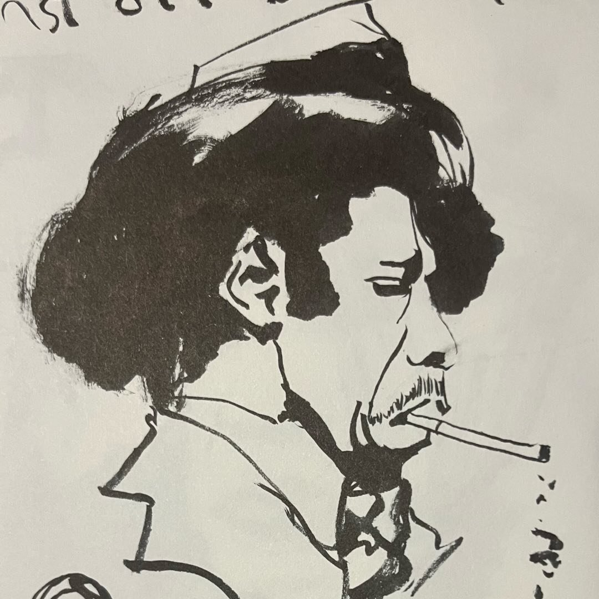
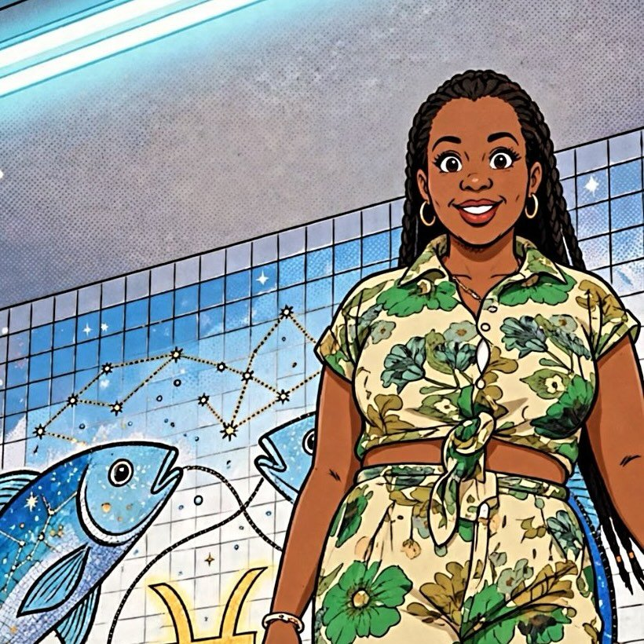
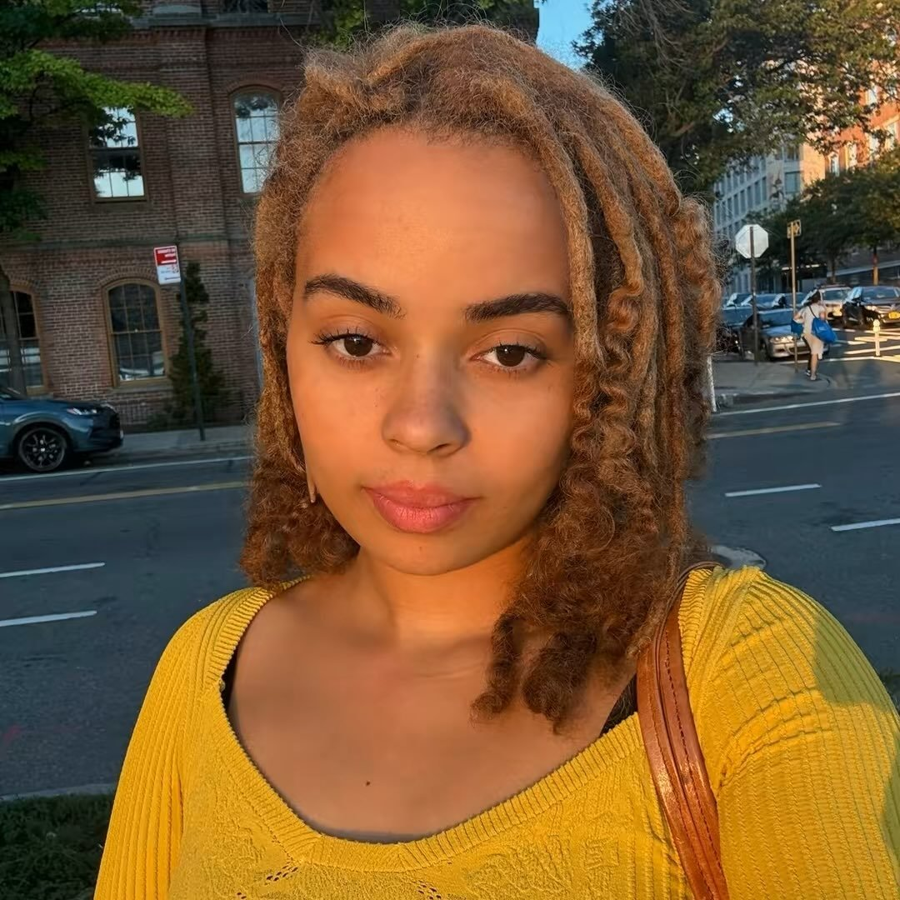
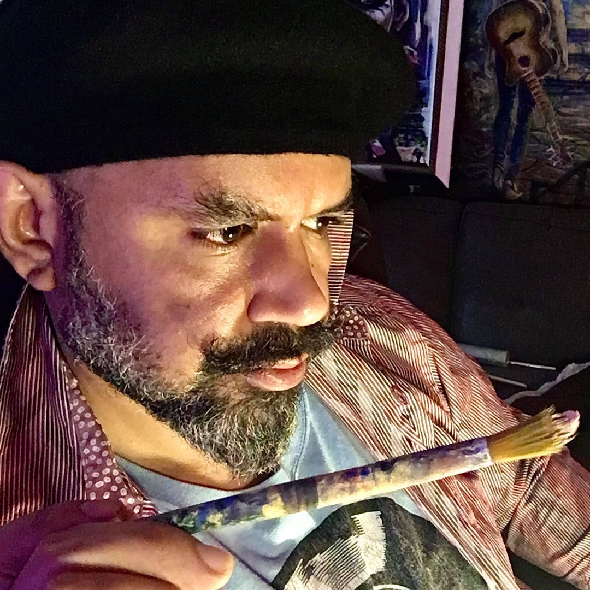
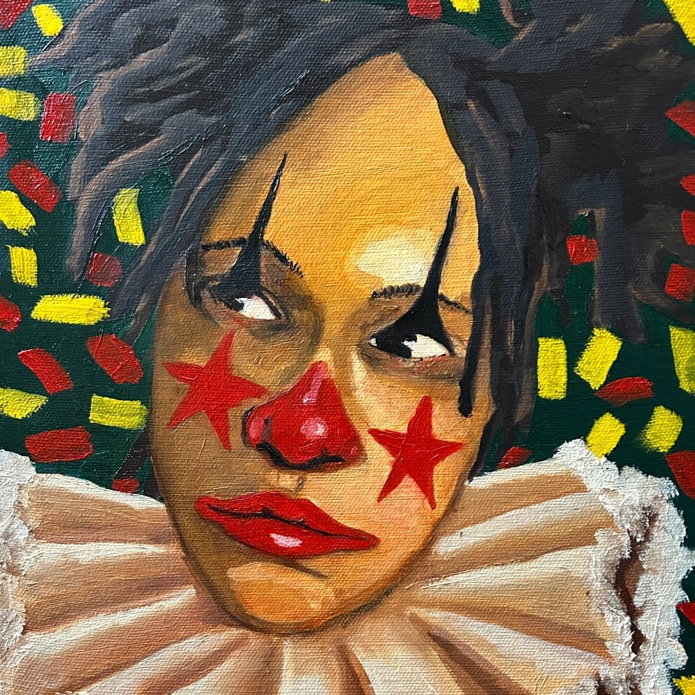
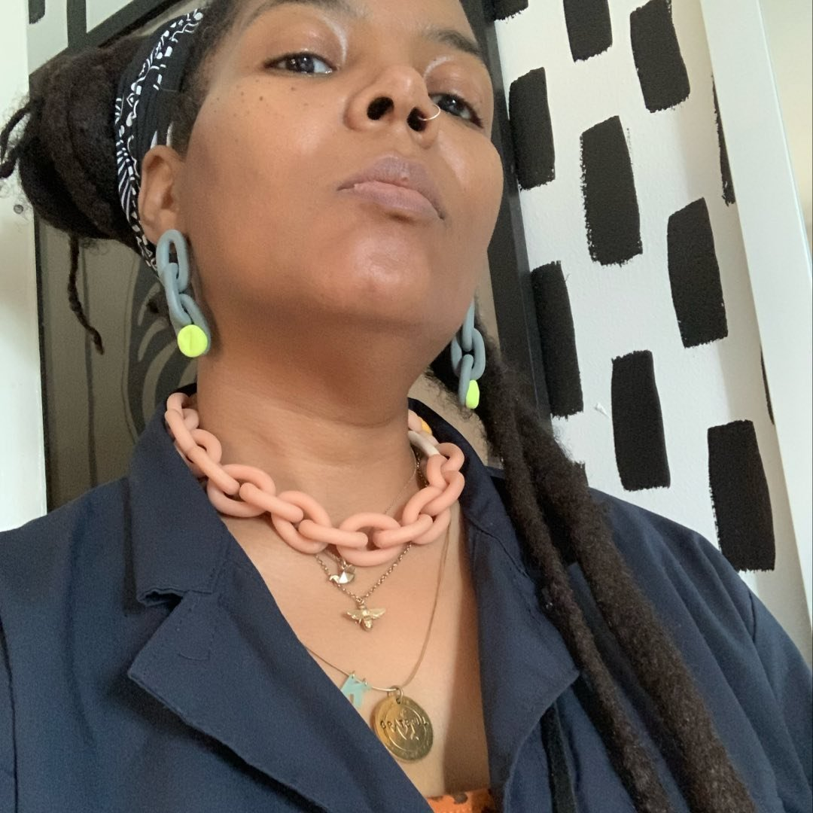
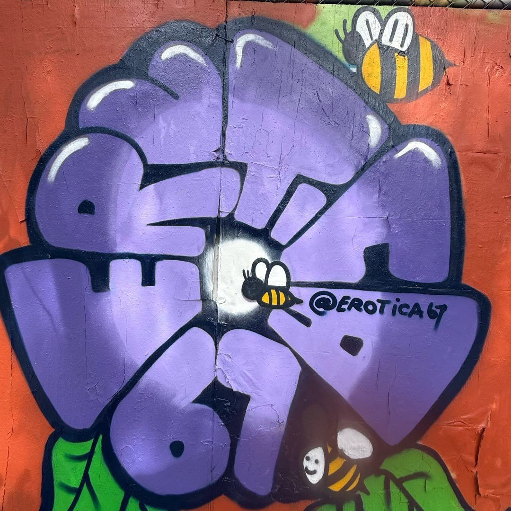
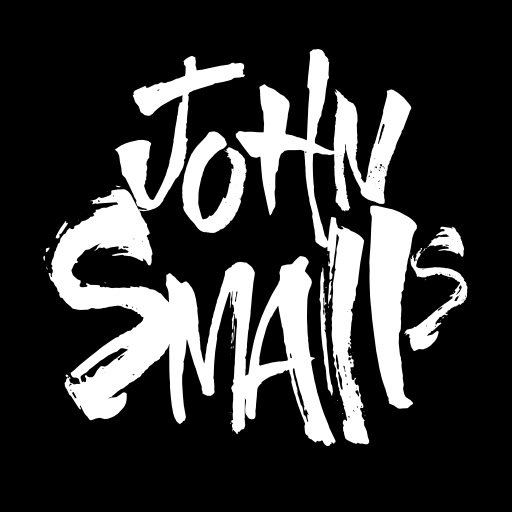
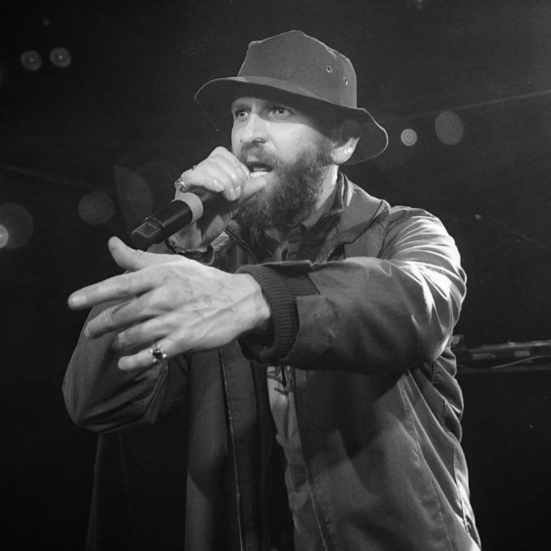

MO
Featured artist · Taste of Paint 2026
Instagram ↗Art, music, people and creative energy. Explore the artist-led gatherings organized by Marthalicia Matarrita, bringing artists and art lovers together to share work and support the creative community.
Join Basement Art Sessions for an evening celebrating working artists and the creative community. Participating artists have been invited to share and sell their artwork.
Please confirm the current location, admission details, age restrictions and event policies with the organizer or ticket page before attending.
Basement Art Sessions is inviting painters and artists to participate in its November 21 gathering. Interested in taking part, or know an artist who might be? Reach out to Marthalicia for participation details.
Explore the people and teams Marthalicia credited in her event announcement.
Artist participation and event arrangements are handled by Basement Art Sessions.
Marthalicia is bringing artists, music and community into the same room through Basement Art Sessions. In her invitation to participating artists, she describes these gatherings as a way to celebrate artists in the present and help create more art opportunities in the future.
For Taste and Paint, invited artists are encouraged to bring their work, connect with visitors and offer finished artwork for sale at prices they choose.
This page is an independent Everything Art community spotlight. Event arrangements and artist participation are coordinated by the organizer.
Discover Marthalicia's artwork, murals, creative business and the community behind Basement Art Sessions.
Links lead to the organizer's own pages. Everything Art is an independent community spotlight.
Meet the featured artists of Taste of Paint on November 21, 2026. Explore their work and follow their creative journeys.

Featured artist · Taste of Paint 2026
Instagram ↗Featured artist · Taste of Paint 2026
Instagram ↗Featured artist · Taste of Paint 2026
Profile details to follow
Featured artist · Taste of Paint 2026
Instagram ↗Featured artist · Taste of Paint 2026
Instagram ↗Featured artist · Taste of Paint 2026
Instagram ↗
Featured artist · Taste of Paint 2026
Instagram ↗Featured artist · Taste of Paint 2026
Instagram ↗Featured artist · Taste of Paint 2026
Instagram ↗
Featured artist · Taste of Paint 2026
Instagram ↗
Featured artist · Taste of Paint 2026
Instagram ↗Featured artist · Taste of Paint 2026
Profile details to follow
Featured artist · Taste of Paint 2026
Instagram ↗
Featured artist · Taste of Paint 2026
Instagram ↗
Featured artist · Taste of Paint 2026
Instagram ↗
Featured artist · Taste of Paint 2026
Instagram ↗Names are based on the organizer’s featured-artist flyers. Instagram links are based on organizer tags or established artist accounts. The gallery uses profile images supplied for the event. Additional biographies will be added as they are verified. Amanda Otero and Kevin Gonzalez are credited separately here although they share an event flyer.
Bring artists and audiences together in a shared creative space.
Make room for artwork, conversation, music and direct connections.
Document future sessions, artists and developments as the organizer shares them.
From early artist gatherings to newer Bronx events, Basement Art Sessions has a history worth keeping. These dated references offer a starting point for the archive, with more stories, flyers and memories to be added as they are shared.
In a January 2015 personal recap, Marthalicia wrote about holding four Basement Art Sessions during 2014. The original blog is a starting point for exploring those early gatherings.
Explore Marthalicia's art blog ↗A February interview discusses Marthalicia's art and the community behind the sessions. A participating artist also documented an early gathering in March.
An archived listing connects Basement Art Sessions with a live-painting and barbecue gathering at Copacabana in Manhattan on August 10, 2024.
View archived event listing ↗September 12, 2026 · Bronx, New York. The original ticket listing offers a glimpse of the series and its invitation to artists.
View Session #8 listing ↗November 21, 2026 · Orion's BX, Bronx. The featured upcoming gathering brings together art, food, music and community collaborators.
See the event details ↑Flyers, photographs and moments from the sessions. This gallery is taking shape as artists and attendees share their memories.
November 21, 2026 · Event flyer
September 12, 2026 · Bronx
August 10, 2024 · Manhattan
2014–2015 · Historical archive
Preview spaces are placeholders, not photographs of past sessions. Contributions will be added with permission and verified event details.
Artists and attendees who have old flyers, photographs or memories can contact Marthalicia about contributing to the story. Materials should only be published with the appropriate permissions.
Share a memory with the organizer ↗This is a developing selection of historical references, not a complete list of numbered sessions. Some older links may be archived or change over time. We will not assign missing session numbers or identify participants without reliable records.